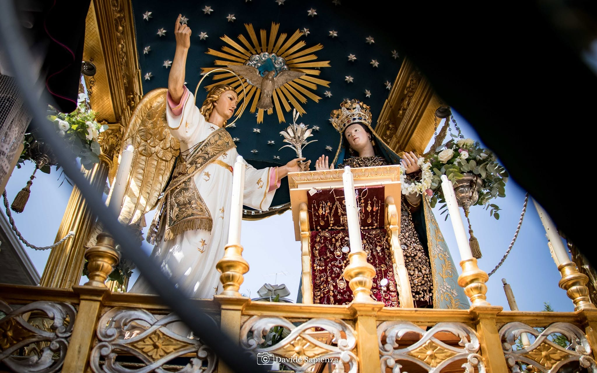

Festa di Maria SS. Annunziata – Pedara
Un viaggio nella devozione dal 1388 ad oggi. Una tradizione viva che unisce storia, fede e identità comunitaria nel cuore di Pedara.
Le Radici della Fede: dalle origini trecentesche al nuovo paese
La devozione pedarese risale al 15 giugno 1388, quando il vescovo Simone del Pozzo autorizzò la costruzione della prima chiesa parrocchiale. Nel XV secolo, a causa delle eruzioni vulcaniche, la popolazione si spostò verso sud abbandonando il sito originario.
Sul finire del Cinquecento, Ludovico Pappalardo finanziò la costruzione di una nuova chiesa dedicata all'Annunziata in un terreno di sua proprietà denominato 'u locu ranni, gettando le basi per l'attuale centro cittadino.

Le Tappe della Devozione
La Nascita delle Manifestazioni Esterne (1612)
Nel 1612, Ludovico Pappalardo e i cittadini chiesero al vescovo Bonaventura Secusio l'autorizzazione per le processioni esterne. Ottenuto il permesso nell'agosto 1614, la prima storica festa esterna fu celebrata l'8 settembre 1614.
La Nascita delle Manifestazioni Esterne (1612)
Nel 1612, Ludovico Pappalardo e i cittadini chiesero al vescovo Bonaventura Secusio l'autorizzazione per le processioni esterne. Ottenuto il permesso nell'agosto 1614, la prima storica festa esterna fu celebrata l'8 settembre 1614.
Lo splendore barocco e i momenti di crisi
Il Settecento segnò l'apice del Barocco siciliano, con processioni a torce, corse del palio e spettacoli nel teatro edificato da Don Diego Pappalardo.
Nonostante il terremoto del 1693 e le carestie dell'Ottocento, la fede rimase intatta, portando allo spostamento della festa alla seconda domenica di settembre.
Il cuore della Festa: tradizioni e riti
I festeggiamenti in onore di Maria Santissima Annunziata rappresentano un intenso percorso di fede, cultura e folklore che trasforma Pedara in un palcoscenico a cielo aperto. Il cammino di preparazione e i giorni clou seguono un copione tramandato di generazione in generazione.
1° Settembre: L'Alba
L'inizio ufficiale con i 21 colpi a cannone.
1° Domenica:I Cerei
Il primo giro delle Candelore, che annunciano alla comunità l'inizio del tempo di festa.
2°Venerdì: La Cera
Rito seicentesco della solenne processione per l'offerta della cera, che si snoda dalla Chiesa di Sant'Antonio fino al Santuario.
2°Sabato: I Carri
La sfida artistica tra i quartieri Piazza e Sant'Antonio, che presentano i monumentali Carri Mariani.
2°Domenica e 3°Lunedì:I giorni clou
Il simulacro percorre le vie sul fercolo ottocentesco, tra fuochi d'artificio e il calore di migliaia di devoti.
3°Domenica: L'Ottava
Dopo le messe solenni, il simulacro viene velato nella sua cappella, concludendo i festeggiamenti in un clima di intima devozione.